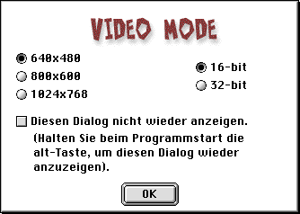

DER ERSTE START
DER ERSTE START
VIDEO MODE
Wenn Sie Cro-Mag Rally das erste Mal starten, erscheint die Video Mode Dialogbox:

Voreingestellt sind die Werte, die Sie oben sehen. Sie müssen bei Änderungen an diesen Einstellungen beachten, daß jede Abweichung von der Vorgabe mehr VRAM benötigt. Bei einem Mac mit 6 MB VRAM muß man die oben abgebildeten Einstellungen wählen, da sonst nicht genug VRAM für alle Spiel-Texturen zur Verfügung steht. Die Spielgeschwindigkeit wird ebenfalls beeinflußt. Je höher Sie die Auflösung einstellen, desto langsamer wird das Spiel.